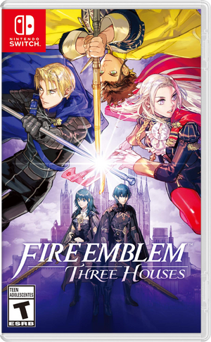

I suggest reading this in order espcailly the gameplay tab. This is also a have seroius website. I will have some biasis opinions on some of my pages... mainly the last one.
I suggest reading this in order espcailly the gameplay tab. This is also a have seroius website. I will have some biasis opinions on some of my pages... mainly the last one.
Fire Emblem is a Japanese Tactical RPG (Role-Playing-Game). Created by Nintendo. The series orginally started in 1990 on the NES. Currenty, They're 17 games and spinoffs. What makes this series popular is the sheer difficultly of the games and the infamous classic mode. In classic mode, if a unit is defeated, they are permanently dead for the rest of the playthrough. The series usually takes place during midevil times and often has supernatueral creatures like dragons and gods.

Three Houses was alomst of reboot of Fire Emblem as the story is implied to take place in its own world, unlike the other games which took place over hundrends of years. The latest game, Fortunes Weave taking place 400 years after the events of Three Houses. The main game takes place in a Continent named Fodlan. Where the land is divided by Three Powers, The Alliacne, The Empire, And The Kingdom. Most of the story involes Byleth, who was a mercenary and now professor of one of the three classes. Over the story, you teach your class while also uncovering mysterious of Fodlan itself.
Fire Emblem is owned by © Nintendo